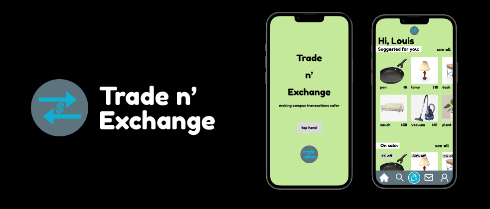
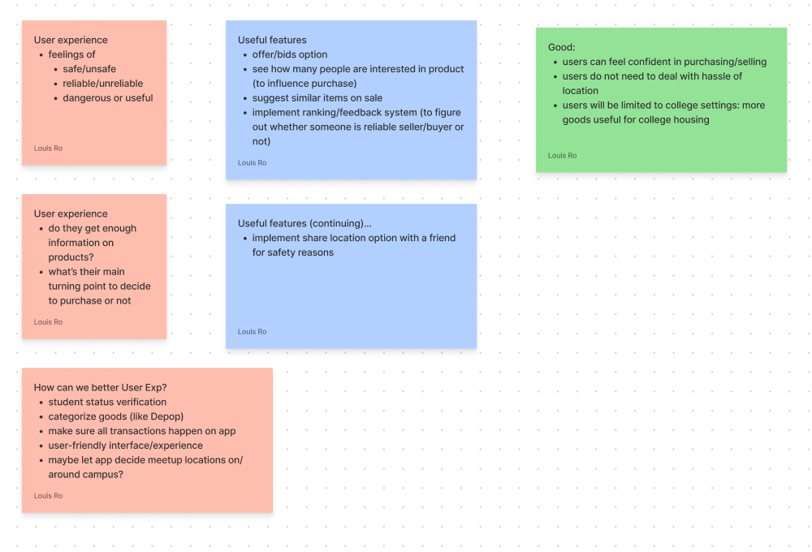
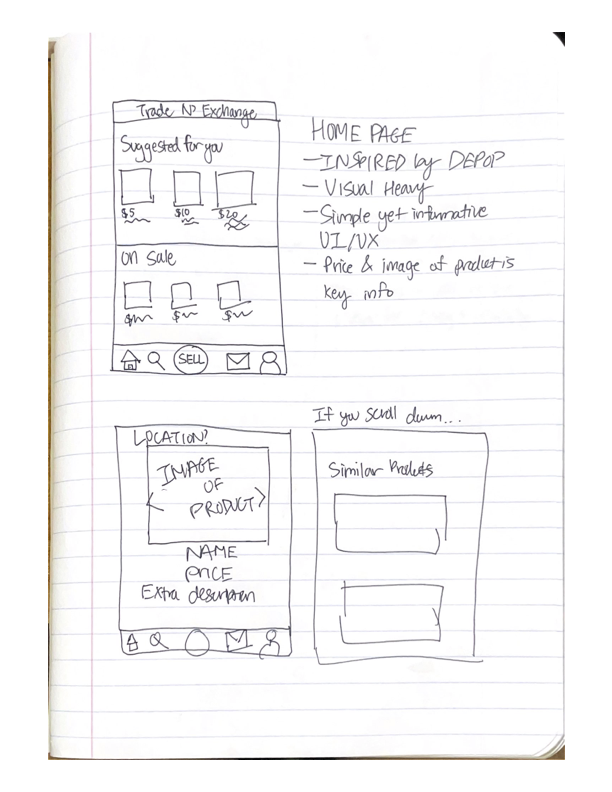
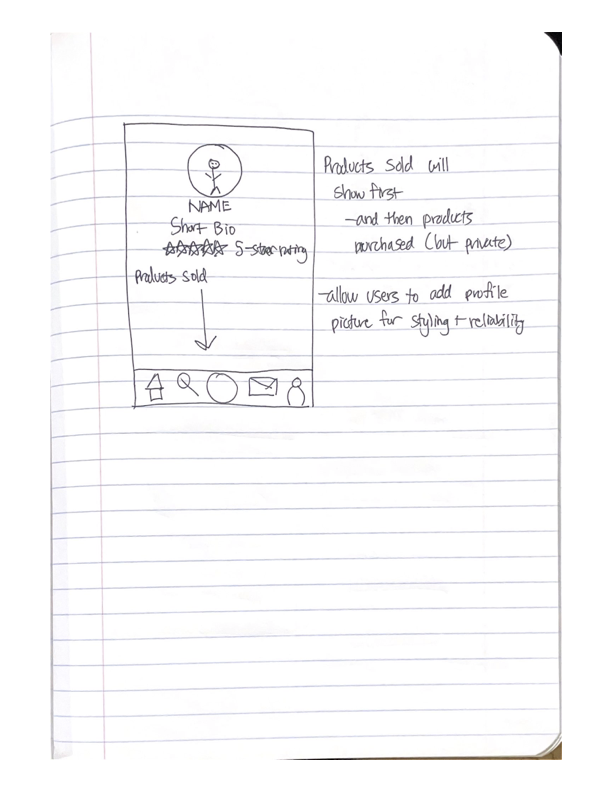

Role:
Product Manager, Product Designer, Market Researcher
Time:
2 Weeks
Product:
Mobile App platform for third-party buying/selling transactions
Overview: During move-in and move-out weeks for USC, many hustle onto Facebook Marketplace (FBM) to either 1. purchase furniture and mini-goods for their new campus housing or 2. rush to sell everything before they need to go back home. However, scammers have began to exploit desperate college students in this process, attempting to steal money and goods from them. Many voiced their concerns on how they don’t feel safe buying/selling on FBM, but have no choice because there are no other platforms dedicated to college students. How can we design and provide a centralized product that provides comfort and ease to students when it comes to buying/selling, but also a friendly user-experience?
Many universites in the United States have their own procedures and culture when it comes to buying/selling their college housing furniture or random college goods. The reason behind this is because:
I attend USC and we use mostly Facebook Marketplace (FBM) for these transactions. However, I am aware other universities use Reddit, GroupMe, their own university platforms, etc. At USC, many of my peers and friends voiced their concerns on the safety and reliability for these platforms, because scams are common and it’s always scary to meet a stranger with money on the line. One friend of mine managed to get a good deal from a stranger for a dining table she really wanted; however, it turned out that the dining table was not how the photo portrayed it, and she felt lied to.
I conducted a survey among college students regarding their own experience buying/selling on FBM, and here are some key insights:
I created one main question to help guide me throughout my research process:
Target Audience
FBM is used by a wide range of individuals. However, for the sake of research and simplicity, we narrowed it down to:
Market Analysis
Current undergraduate enrollment at USC is: 21,000
On the survey, 70% of respondents stated they have used FBM to buy/sell.
Taking into account that not all USC undergraduate students use the platform; we can estimate the market size to be around ~14,700 students.
Competitive Analysis
The top two used platforms for buying/selling at USC is: FBM and GroupMe
Currently, 80% of students use their smartphone device to buy/sell on FBM. Hence, I’ve decided to design a mobile app. The inspiration comes from Depop, a third-party selling platform dedicated to apparel and fashion items.
I got the opportunity to use the Affinity Diagram template on FigJam (first time using FigJam as well!). I decided to note every single idea and thought that popped up into my head, as I felt that categorizing them would rather restrict me from free-flowing my ideas.
From there, I conducted research on Depop, and Korean third-party selling platform Karrot to figure out what their essential features are, and how it implements into the overall user experience. I've decided for Trade n' Exchange, these are the essential features:
Considering the potential essential features listed above, I sketched a low fidelity wireframe in order to visualize the necessary design components for the app.
 I've decided the navigation bar will be a key compontent in the user experience, as I wanted to create a centralized point where users can navigate to wherever feature or component. I've added another layout of the app, where it will serve as the Profile page. Users can customize the page with a profile picture, short bio/description explaining who they are at their respective college campuses, and what products they're selling.
When users first access the app, they will get the option to Log in to a pre-existing account or register a new account. When registering for a new account, users will be asked to enter their personal information such as Name and Email. This step will also include the student status verification process, where users must enter their student ID number as well as a photo of their student ID.
After log in, users can immediately look through products under a "Suggested for you" section; this may include listings geographically near, or if user has already looked through the app and its products, then it will show similar products. There is a "On sale" section below as well, in order to cater for the financial nature that most college students face.
When users directly click on a product, they will be taken to the product detail page (PDP). They can read who is listing the product, as well as its price and location, alongside any other remarks stated by the seller. Below, users can see similar listings to the product, in case they want to browse through alternatives prior to purchase.
Users can use the navigation bar located on the bottom in order to navigate through the app and its features. Its components include the home button, the search button, the sell/list button, the chat button, and the profile button. Each button leads to another page of the app, where users can access its respective features.
While this app did solve the main issue of promoting a safer, friendlier environment when buying/selling on campus, there are still areas of improvement that can be made in terms of the logistics. The concept of buying/selling is extremely dominant in almost all universites around the nation, and there's many potential when it comes to this app. It can be noted that buying and selling can be considered as two separate experiences through the app, especially because our listing option in the navigation bar allows exclusively only to list. Overall, this case study was extremely enjoyable, and I feel that I am more knowledge in creating products from ideation to execution!